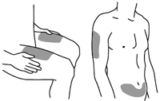
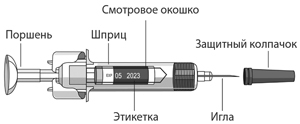
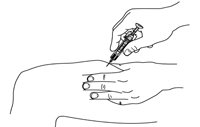
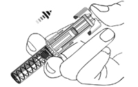

|
 |
| СТЕЛАРА® (STELARA®) ustekinumab раствор д/п/к введения | |||||||||||||||||||||||||||||||||||||||||||||||||||||||||||||||||||||||||||||||||||||||||||||||||||||||||||||||||||||||||||||||||||||||||||||||||||||||||||||||||||||||||||||||||||||||
|
Клинико-фармакологическая группа: Иммунодепрессивный препарат. Антагонист рецепторов интерлейкинов Номер и дата регистрации: ЛП-001104 от 03.11.11 Код ATX: L04AC05 |
Владелец регистрационного удостоверения: зарегистрировано Представительство: ЯНССЕН, фармацевтическое подразделение ООО "Джонсон & Джонсон" | ||||||||||||||||||||||||||||||||||||||||||||||||||||||||||||||||||||||||||||||||||||||||||||||||||||||||||||||||||||||||||||||||||||||||||||||||||||||||||||||||||||||||||||||||||||||
Форма выпуска, состав и упаковка Раствор для п/к введения прозрачный или слегка опалесцирующий, от бесцветного до светло-желтого цвета; раствор может содержать единичные прозрачные частицы белка.
Вспомогательные вещества: сахароза - 38 мг, L-гистидин (в том числе L-гистидина гидрохлорида моногидрат) - 0.5 мг, полисорбат 80 - 0.02 мг, вода д/и - до 0.5 мл. 0.5 мл - шприцы из боросиликатного стекла (тип I) (1) с устройством UltraSafe Passive® - пачки картонные. Раствор для п/к введения прозрачный или слегка опалесцирующий, от бесцветного до светло-желтого цвета; раствор может содержать единичные прозрачные частицы белка.
Вспомогательные вещества: сахароза - 76 мг, L-гистидин (в том числе L-гистидина гидрохлорида моногидрат) - 1.0 мг, полисорбат 80 - 0.04 мг, вода д/и - до 1.0 мл. 1.0 мл - шприцы из боросиликатного стекла (тип I) (1) с устройством UltraSafe Passive® - пачки картонные. | |||||||||||||||||||||||||||||||||||||||||||||||||||||||||||||||||||||||||||||||||||||||||||||||||||||||||||||||||||||||||||||||||||||||||||||||||||||||||||||||||||||||||||||||||||||||
| |||||||||||||||||||||||||||||||||||||||||||||||||||||||||||||||||||||||||||||||||||||||||||||||||||||||||||||||||||||||||||||||||||||||||||||||||||||||||||||||||||||||||||||||||||||||
Описание препарата основано на официально утвержденной инструкции по применению и утверждено компанией-производителем для издания 2022 г. | |||||||||||||||||||||||||||||||||||||||||||||||||||||||||||||||||||||||||||||||||||||||||||||||||||||||||||||||||||||||||||||||||||||||||||||||||||||||||||||||||||||||||||||||||||||||
Фармакологическое действие |
Фармакокинетика |
Показания |
Режим дозирования |
Побочное действие |
Противопоказания |
Беременность и лактация |
Особые указания |
Передозировка |
Лекарственное взаимодействие |
Условия хранения и сроки годности |
Условия реализации
Фармакологическое действие
Устекинумаб представляет собой полностью человеческое моноклональное антитело IgG1?, которое специфично связывается с общей единицей белка p40 интерлейкинов (ИЛ) ИЛ-12 и ИЛ-23 человека. Препарат Стелара® ингибирует биоактивность ИЛ-12 и ИЛ-23 человека, предотвращая связывание p40 с рецептором ИЛ-12Rβ1, экспрессируемым на поверхности иммунных клеток. Препарат Стелара® не связывается с ИЛ-12 или ИЛ-23, которые уже связаны с рецепторами ИЛ-12Rβ1 на поверхности клеток. Таким образом, маловероятно, что препарат Стелара® будет способствовать опосредованной комплементом или антителами цитотоксичности в отношении клеток, экспрессирующих рецепторы к ИЛ-12 и/или ИЛ-23. ИЛ-12 и ИЛ-23 представляют собой гетеродимерные цитокины, секретируемые активированными антигенпредставляющими клетками, например, макрофагами и дендритными клетками. ИЛ-12 стимулирует клетки-естественные киллеры (NK) и дифференцировку CD4+ T-клеток до фенотипа Т-хелпера-1 (Th1), а также стимулирует выработку интерферона гамма (ИФНγ). ИЛ-23 индуцирует путь Т-хелперов-17 (Th17) и способствует выработке ИЛ-17A, ИЛ-21, и ИЛ-22. У пациентов с псориазом определятся повышенные уровни ИЛ-12 и ИЛ-23 в коже и крови. Концентрация ИЛ12/23p40 в сыворотке крови является фактом дифференциации пациентов с псориатическим артритом, что подтверждает участие ИЛ-12 и ИЛ-23 в патогенезе псориатических воспалительных заболеваний. Полиморфизм генов, кодирующих ИЛ-23А, ИЛ-23R и ИЛ-12B, определяет предрасположенность к таким заболеваниям. Кроме того, высокий уровень экспрессии ИЛ-12 и ИЛ-23 обнаруживается в пораженной псориазом коже, а опосредованная ИЛ-12 индукция интерферона гамма коррелирует с активностью псориатического процесса. Чувствительные к ИЛ-23 Т-клетки были обнаружены в энтезах у мышей со смоделированным воспалительным артритом, где ИЛ-23 вызывал воспаление энтезов. Кроме того, имеются доклинические данные, свидетельствующие об участии ИЛ-23 и нисходящих путей в процессах эрозии и разрушения костной ткани посредством повышения экспрессии рецепторного активатора лиганда ядерного фактора κB (RANKL), который активирует остеокласты. У пациентов с болезнью Крона отмечено повышение уровней ИЛ-12 и ИЛ-23 в кишечнике и лимфатических узлах. Это сопровождается увеличением уровней интерферона и ИЛ-17A в сыворотке, указывая, что ИЛ-12 и ИЛ-23 способствуют активации Th1 и Th17 при болезни Крона. Кроме того, как ИЛ-12, так и ИЛ-23 могут стимулировать выработку Т-клетками ФНО-α, что приводит к хроническому воспалению кишечника и повреждению эпителиальных клеток. Была обнаружена достоверная взаимосвязь между болезнью Крона и генетическим полиморфизмом генов ИЛ23R и ИЛ12B, что указывает на потенциальную причинную роль сигнальной системы ИЛ-12/23 в развитии заболевания. Это подтверждается доклиническими данными, свидетельствующими, что активация сигнального пути ИЛ-12/23 необходима для развития повреждения кишечника у мышей со смоделированным воспалительным поражением кишечника. Связывая общую субъединицу p40 ИЛ-12 и ИЛ-23, препарат Стелара® может влиять на клиническое течение псориаза, псориатического артрита, болезни Крона и язвенного колита посредством прерывания пути выработки цитокинов Th1 и Th17, которые играют центральную роль в патогенезе этих заболеваний. У пациентов с псориазом и/или псориатическим артритом при терапии препаратом Стелара® не отмечалось очевидного влияния на относительное количество популяций циркулирующих иммунных клеток, в том числе субпопуляции Т-клеток памяти и неактивированных Т-клеток, или уровни циркулирующих цитокинов. В исследованиях, проведенных у пациентов с псориазом и псориатическим артритом, клинический ответ (улучшение оценок по PASI и ACR соответственно), по-видимому, был взаимосвязан с концентрацией устекинумаба в сыворотке. У пациентов с псориазом с лучшим клиническим ответом по шкале PASI средняя концентрация устекинумаба в сыворотке крови была выше, чем у пациентов с менее выраженным клиническим ответом. Доля пациентов, у которых на 28-ой неделе терапии был достигнут ответ PASI 75, увеличивалась по мере увеличения концентрации устекинумаба в сыворотке. Доля пациентов, у которых были достигнуты оценки ACR 20 и ACR 50, увеличивалась по мере увеличения концентрации устекинумаба в сыворотке крови. У пациентов с болезнью Крона и язвенным колитом в результате терапии препаратом Стелара® отмечалось значимое снижение уровней маркеров воспаления, в том числе С-реактивного белка (CRP) и фекального кальпротектина. У пациентов, получавших препарат Стелара® в течение 44 недель, по сравнению с группой плацебо достигалось и сохранялось снижение в сыворотке крови концентраций ИФНγ и ИЛ-17А, являющихся провоспалительными цитокинами, регулируемыми ИЛ-12 и ИЛ-23. Иммунизация Во время долгосрочного клинического исследования III фазы (PHOENIX 2), у пациентов с псориазом, получавших препарат Стелара® в течение, по крайней мере, 3,5 лет, наблюдался иммунный ответ на полисахаридную пневмококковую и противостолбнячную вакцину, схожий с таковым в контрольной группе пациентов, получавших несистемную терапию псориаза. У примерно одинакового относительного числа (%) пациентов, получающих лечение препаратом Стелара®, и пациентов из контрольной группы достигалась защитная концентрация противопневмококковых и противостолбнячных антител. Фармакокинетика
Всасывание Медиана времени до достижения Cmax устекинумаба в сыворотке крови у здоровых лиц составила 8.5 дней после его однократного п/к введения в дозе 90 мг. Медианы показателя tmax устекинумаба после его однократного подкожного введения в дозе 45 мг или 90 мг у пациентов с псориазом были сравнимы с таковыми, отмечаемыми у здоровых добровольцев. Абсолютная биодоступность устекинумаба после его однократного подкожного введения пациентам с псориазом составляет оценивается равной 57.2%. Распределение Среднее значение Vd устекинумаба у пациентов с псориазом в терминальной фазе выведения после однократного в/в введения составляла от 57 до 83 мл/кг. По результатам популяционного фармакокинетического анализа Vd устекинумаба в равновесном состоянии составил 4.62 л у пациентов с болезнью Крона и 4,44 л у пациентов с язвенным колитом. Метаболизм Метаболический путь устекинумаба не известен. Выведение Медиана системного клиренса устекинумаба у пациентов с псориазом после однократного в/в введения составляла от 1.99 до 2.34 мл/сут/кг. В ходе клинических исследований T1/2 устекинумаба у пациентов с болезнью Крона, псориазом и/или псориатическим артритом находился в диапазоне от 15 до 32 дней, а его медиана составила около 3 недель. По результатам популяционного фармакокинетического анализа клиренс устекинумаба составил 0.19 л/сут, а T1/2 – около 19 дней у пациентов с болезнью Крона и язвенным колитом. Линейность дозы Системная экспозиция устекинумаба (Cmax и AUC) после однократного внутривенного введения в дозе от 0.09 мг/кг до 4.5 мг/кг или после однократного п/к введения в дозе от приблизительно 24 мг и до 240 мг у пациентов с псориазом возрастала примерно пропорционально введенной дозе. Фармакокинетика после однократного и многократного введения Профили изменения концентрации устекинумаба в плазме крови с течением времени после однократного или многократного п/к введения в целом были предсказуемы. Css устекинумаба в плазме крови у пациентов с псориазом достигалась к 28-ой неделе после первого п/к введения и на 0-й и 4-й неделях при последующих введениях каждые 12 недель. Медиана наименьших значений Css находилась в диапазоне от 0.21 мкг/мл до 0.26 мкг/мл (при введении в дозе 45 мг) и от 0.47 мкг/мл до 0.49 мкг/мл (при введении в дозе 90 мг). После в/в введения рекомендованной инициирующей дозы медиана Cmax устекинумаба составила 126.1 мкг/мл у пациентов с болезнью Крона и 127.0 мкг/мл у пациентов с язвенным колитом Начиная с 8-ой недели, п/к введение поддерживающей дозы устекинумаба, составляющей 90 мг, проводилось каждые 8 или 12 недель. Css устекинумаба достигалась к моменту введения второй поддерживающей дозы. При п/к введении устекинумаба 1 раз каждые 8 или 12 недель не наблюдалось признаков кумуляции дозы с течением времени. При п/к введении поддерживающей дозы 90 мг устекинумаба 1 раз каждые 8 недель медиана наименьших значений Css находилась в диапазоне от 1.97 мкг/мл до 2.24 мкг/мл у пациентов с болезнью Крона и в диапазоне от 2.69 мкг/мл до 3.09 мкг/мл у пациентов с язвенным колитом. При п/к введении поддерживающей дозы 90 мг устекинумаба 1 раз каждые 12 недель медиана наименьших значений Css находилась в диапазоне от 0.61 мкг/мл до 0.76 мкг/мл у пациентов с болезнью Крона и в диапазоне от 0.92 мкг/мл до 1.19 мкг/мл у пациентов с язвенным колитом. На фоне наименьших значений Css устекинумаба, достигавшихся при его введении в дозе 90 мг с частотой 1 раз каждые 8 недель, отмечались более высокие показатели клинической ремиссии, чем при наименьших значениях Css, достигавшихся после введения устекинумаба в дозе 90 мг с частотой 1 раз каждые 12 недель. Определение частоты п/к введения На основании полученных данных и популяционного фармакокинетического анализа отмечено, что у пациентов с болезнью Крона и язвенным колитом с потерей ответа на терапию наблюдается понижение концентрации устекинумаба в крови с течением времени по сравнению с пациентами с сохраненным ответом на терапию. При терапии болезни Крона изменение кратности подкожного введения дозы 90 мг с 1-го раза в 12 недель до 1-го раза в 8 недель вызывало повышение наименьших значений Css устекинумаба и сопровождалось повышением эффективности. При терапии язвенного колита симуляции на основании популяционной фармакокинетической модели показали, что при изменении кратности п/к введения дозы 90 мг с 1-го раза в 12 недель до 1-го раза в 8 недель ожидается троекратное увеличение наименьших значений Css устекинумаба. Кроме того на основании данных клинических исследований у пациентов с язвенным колитом отмечается прямая зависимость между наименьшими значениями Css устекинумаба в плазме крови и клиническим ответом на терапию, клинической ремиссией и заживлением слизистой оболочки кишечника. Влияние массы тела на фармакокинетику У пациентов с псориазом или псориатическим артритом концентрация устекинумаба в плазме крови изменялась в зависимости от массы тела. При применении в любой из доз (45 мг или 90 мг) у пациентов с более высокой массой тела (>100 кг) отмечалась более низкая медиана концентрации устекинумаба по сравнению с пациентами с более низкой массой тела (≤100 кг). Однако при сравнении разных доз медиана наименьших концентраций устекинумаба в плазме крови у пациентов с более высокой массой тела (>100 кг) при дозе 90 мг была сравнима с таковой у пациентов с более низкой массой тела (≤100 кг) при дозе 45 мг. Популяционный фармакокинетический анализ В ходе популяционного фармакокинетического анализа с использованием данных, полученных у пациентов с псориазом, кажущийся клиренс и кажущийся Vd составили 0.465 л/сут и 15.7 л соответственно, а T1/2 у пациентов с псориазом составил около 3-х недель. Кажущийся клиренс устекинумаба не зависел от пола, возраста или расы. Он зависел от массы тела, при этом отмечалась тенденция к более высоким показателям кажущегося клиренса у пациентов с более высокой массой тела. Медиана кажущегося клиренса у пациентов с массой тела >100 кг была приблизительно на 55% выше, чем у пациентов с массой тела ≤100 кг. Медиана кажущегося Vd у пациентов с массой тела >100 кг была приблизительно на 37% выше, чем у пациентов с массой тела ≤100 кг. Аналогичные результаты были получены и в результате подтверждающего популяционного фармакокинетического анализа, проводившегося по данным, полученным для пациентов с псориатическим артритом. В ходе популяционного фармакокинетического анализа у пациентов с псориазом была проведена оценка влияния сопутствующих заболеваний (сахарный диабет, артериальная гипертензия и гиперлипидемия) на фармакокинетику устекинумаба. На нее оказывало влияние наличие сахарного диабета, при этом у пациентов с сахарным диабетом отмечалась тенденция к более высоким показателям кажущегося клиренса. Средние показатели кажущегося клиренса у пациентов с сахарным диабетом были приблизительно на 29% выше, чем у пациентов без сахарного диабета. Популяционный фармакокинетический анализ установил наличие тенденции к более высоким показателям клиренса устекинумаба у пациентов с положительным иммунным ответом. Специальных исследований лекарственных взаимодействий у здоровых лиц или у пациентов с псориазом, псориатическим артритом, болезнью Крона или язвенным колитом не проводилось. В ходе популяционного фармакокинетического анализа было изучено влияние лекарственных препаратов, наиболее часто применяемых у пациентов с псориазом (в т.ч. парацетамола/ацетаминофена, ибупрофена, ацетилсалициловой кислоты, метформина, аторвастатина, напроксена, левотироксина, гидрохлортиазида и противогриппозной вакцины), на фармакокинетику устекинумаба. Было установлено, что ни один из этих препаратов не оказывает значимого влияния. Фармакокинетика устекинумаба не изменялась при одновременном применении с НПВС и в случае предшествующей терапии ингибиторами ФНО-α у пациентов с псориатическим артритом. Фармакокинетика устекинумаба не изменялась при одновременном применении с метотрексатом, пероральными ГКС, 6-меркаптопурином или азатиоприном у пациентов с болезнью Крона, а также в случае предшествующей терапии биологическими препаратами (например, ингибиторами ФНО-α и/или ведолизумабом) у пациентов с язвенным колитом. Эффекты ИЛ-12 или ИЛ-23 в отношении регуляции активности изоферментов CYP450 были изучены в ходе исследования in vitro с применением гепатоцитов человека. В результате было установлено, что ИЛ-12 и/или ИЛ-23 при концентрации 10 нг/мл не влияют на активность изоферментов CYP450 (CYP1A2, 2B6, 2C9, 2C19, 2D6 или 3A4). Особые группы пациентов Дети (в возрасте от 6 до 18 лет). Фармакокинетика устекинумаба у детей в возрасте от 6 до 18 лет, с псориазом, получавших рекомендованную дозу, в целом была сравнима с фармакокинетикой у взрослых пациентов с псориазом. Фармакокинетика устекинумаба у детей в возрасте до 18 лет с болезнью Крона или язвенным колитом не изучалась. Пожилые пациенты (в возрасте от 65 лет и старше). Исследования фармакокинетики у пациентов пожилого возраста не проводилось. Популяционный фармакокинетический анализ среди пациентов старше 65 лет не выявил влияния возраста на величины кажущегося клиренса и Vd. Пациенты с нарушением функции почек. Данные о фармакокинетике препарата у пациентов с нарушением функции почек отсутствуют. Пациенты с нарушением функции печени. Данные о фармакокинетике препарата у пациентов с нарушением функции печени отсутствуют. Другие группы пациентов. Фармакокинетика устекинумаба сравнима у пациентов азиатского происхождения и пациентов неазиатского происхождения с псориазом, болезнью Крона или язвенным колитом. Употребление алкоголя или табака не влияло на фармакокинетику устекинумаба. Показания
Препарат Стелара® показан для лечения бляшечного псориаза средней или тяжелой степени у взрослых пациентов при отсутствии ответа или при наличии противопоказаний, или при непереносимости других методов системной терапии, в т.ч. циклоспорина, метотрексата или ПУВА-терапии (псорален и ультрафиолет А).
Препарат Стелара® показан для лечения бляшечного псориаза средней или тяжелой степени у детей и подростков в возрасте от 6 лет и старше при отсутствии адекватного ответа или непереносимости других методов системной терапии или фототерапии.
Лечение взрослых пациентов с активным псориатическим артритом (ПсА) в качестве монотерапии или в комбинации с метотрексатом при отсутствии адекватного ответа на предыдущую стандартную терапию при отсутствии адекватного ответа на предыдущую стандартную терапию.
Лечение взрослых пациентов с активной болезнью Крона средней или тяжелой степени с неадекватным ответом, утратой ответа или непереносимостью стандартной терапии или терапии ингибиторами ФНО, или имеющих медицинские противопоказания к проведению такой терапии.
Лечение взрослых пациентов с активным язвенным колитом умеренной и тяжелой степени с неадекватным ответом, утратой ответа или непереносимостью стандартной или биологической терапии, или имеющих медицинские противопоказания к проведению такой терапии. Режим дозирования
Препарат Стелара® в лекарственной форме раствор для п/к введения предназначен для п/к инъекций. Взрослые пациенты Бляшечный псориаз Рекомендованная доза составляет 45 мг. Вторую инъекцию делают 4 недели спустя после первого применения, затем каждые 12 недель. У пациентов с массой тела более 100 кг препарат рекомендуется использовать в дозе 90 мг. При неэффективности терапии в течение 28 недель рекомендуется рассмотреть целесообразность применения препарата. Коррекция дозы Пациентам, у которых клиническая эффективность препарата при применении каждые 12 недель выражена недостаточно, следует увеличить дозу препарата до 90 мг каждые 12 недель. В случае если такой режим дозирования не эффективен, дозу препарата 90 мг следует вводить каждые 8 недель. Возобновление лечения Было показано, что возобновление терапии по схеме: вторая инъекция через 4 недели спустя после первого применения, а затем каждые 12 недель, является эффективным и безопасным. Псориатический артрит Рекомендованная доза составляет 45 мг. Вторую инъекцию делают 4 недели спустя после первого применения, затем каждые 12 недель. У пациентов с массой тела более 100 кг препарат рекомендуется использовать в дозе 90 мг. Болезнь Крона и язвенный колит Пациентам с болезнью Крона или язвенным колитом рекомендовано однократное, инициирующее терапию внутривенное введение препарата Стелара® в лекарственной форме концентрат для приготовления раствора для инфузий в дозе, рассчитанной на основании массы тела, с последующим п/к введением дозы 90 мг через 8 недель (первое п/к введение) и 1 раз каждые 12 недель в дальнейшем. Подробная информация о в/в введении препарата Стелара® указана в инструкции по медицинскому применению препарата Стелара®, концентрат для приготовления раствора для инфузий. Пациенты, у которых через 8 недель после первого п/к введения не удалось получить достаточный ответ, в это время могут получить вторую п/к инъекцию. У пациентов с потерей ответа при введении 1 раз в 12 недель положительный результат может получен при увеличении частоты введений до 1-го раза в 8 недель. В дальнейшем препарат пациентам можно вводить 1 раз в 8 недель или 1 раз в 12 недель, в зависимости от клинической ситуации. Во время терапии препаратом Стелара®можно продолжать терапию иммуномодуляторами и/или ГКС. Пациентам, у которых удалось добиться ответа на терапию препаратом Стелара®, терапию ГКС можно сократить или отменить, в соответствии со стандартами терапии. При прерывании терапии болезни Крона возобновление ее посредством подкожных инъекций каждые 8 недель является безопасным и эффективным. Дети (6 лет и старше) Бляшечный псориаз Рекомендованная доза зависит от массы тела пациента, как показано в таблице 1. Вторую инъекцию делают 4 недели спустя после первого применения, затем каждые 12 недель. Таблица 1. Рекомендованная доза препарата Стелара® у детей с бляшечным псориазом
* для расчета необходимого объема препарата (мл) для пациентов с массой тела менее 60 кг используется следующая формула: масса тела (кг) × 0,0083 (мл/кг).Рассчитанный объем препарата округляется до сотой доли мл (0,01 мл). Инъекция осуществляется градуированным шприцем вместимостью 1 мл. Для пациентов, которым необходима доза менее 45 мг, препарат Стелара® выпускается во флаконах с дозировкой 45 мг. Таблица 2. Объем введения препарата Стелара® у детей с бляшечным псориазом с массой тела менее 60 кг
Детям препарат применяется в условиях стационара. При неэффективности терапии в течение 28 недель рекомендуется рассмотреть целесообразность применения препарата. Особые группы пациентов Дети. Исследования препарата Стелара® у детей младше 6 лет не проводились. Пожилые пациенты. В клинических исследованиях не наблюдалось существенных возрастных различий клиренса или объема распределения препарата. Количество пациентов в возрасте от 65 лет и старше было недостаточным для окончательного вывода о влиянии возраста на клиническую эффективность препарата. Пациенты с нарушением функции почек. У пациентов с почечной недостаточностью не проводилось отдельных исследований препарата. Пациенты с нарушением функции печени. У пациентов с печеночной недостаточностью не проводилось отдельных исследований препарата. Указания по введению препарата Препарат предназначен для п/к введения. Перед введением препарата внимательно осмотрите содержимое шприца. Раствор может быть прозрачным или слегка опалесцирующим от бесцветного до светло-желтого цвета, может содержать единичные прозрачные частицы белка. Такой внешний вид является нормальным для белковых растворов. При изменении цвета, помутнении или наличии твердых частиц раствор использовать нельзя. Устекинумаб не содержит консервантов, поэтому любой неиспользованный остаток препарата в шприце использовать нельзя. Препарат не следует смешивать с другими жидкостями для инъекции. Если для введения дозы 90 мг используют 2 шприца по 45 мг препарата, следует сделать 2 последовательные инъекции. При этом вторая инъекция должна быть сделана сразу же после первой. Инъекции следует делать в разные области. Не встряхивайте препарат. Длительное энергичное встряхивание может повредить препарат. Не используйте препарат, если его встряхивали. В начале лечения инъекции препарата Стелара® должен делать только медицинский персонал, однако, в последующем, если врач сочтет это возможным, пациенты или лица, осуществляющие уход за ними, или лица, осуществляющие уход за ними, могут делать инъекции препарата Стелара® самостоятельно, соблюдая все необходимые предосторожности и пройдя предварительно обязательное обучение технике подкожных инъекций, с последующим контролем врача. У детей в возрасте от 6 до 18 лет все инъекции должны проводиться медицинским персоналом. Рекомендованными местами для инъекции являются верхняя часть бедра или область живота примерно 5 см ниже пупка. Также можно использовать область плеча (см. Рис 1). Следует избегать инъекций в область, пораженную псориазом. Рис.1. Рекомендованные места для инъекции  Рис. 2. Шприц с препаратом Стелара®  Достаньте шприц с препаратом из картонной пачки, держа его в направлении иголкой от себя. Убедитесь, что шприц не поврежден. Тщательно вымойте руки и обработайте место инъекции ватным тампоном, смоченным антисептиком. Снимите защитный колпачок с иглы. Вы можете увидеть пузырек воздуха в шприце. Это допустимо, не пытайтесь удалить его. Вы также можете увидеть капельку жидкости на конце иглы. Это также допустимо. Никогда не снимайте защитный колпачок, пока не определились с местом инъекции. Не допускайте контакта иголки с посторонними предметами. Аккуратно зажмите кожу в области инъекции между большим и указательным пальцами, воткните иголку в кожу и медленно опустите поршень шприца до предела (Рис. 3). Рис. 3.  После этого отпустите кожу и осторожно выньте иглу. Как только вы уберете палец с поршня, иголка автоматически скроется в корпусе шприца (Рис.4). Рис. 4.  Приложите ватный тампон, смоченный антисептиком, к месту инъекции и подержите несколько секунд. Не трите место инъекции. При необходимости заклейте пластырем. Использованный шприц необходимо утилизировать в соответствии с местными требованиями по уничтожению такого рода отходов. Повторное использование шприца и иглы запрещено. Побочное действие
Побочные реакции - это нежелательные явления, которые были расценены как обоснованно связанные с использованием устекинумаба на основании всесторонней оценки имеющихся данных о нежелательных явлениях. В отдельных случаях не представляется возможным достоверно установить наличие причинной связи между нежелательным явлением и применением устекинумаба. Кроме того, поскольку клинические исследования проводятся в разных условиях, невозможно провести непосредственное сравнение частоты нежелательных реакций, наблюдаемых в клиническом исследовании препарата, с частотой, наблюдаемой в клинических исследованиях другого препарата, и частота нежелательного явления, наблюдаемая в клиническом исследовании, может не соответствовать частоте, наблюдаемой в клинической практике. Опыт применения в клинических исследованиях у взрослых пациентов с псориазом, псориатическим артритом, болезнью Крона и язвенным колитом Данные по безопасности, представленные далее, отражают применение препарата Стелара® в 14 исследованиях II фазы и III фазы, проведенных у 6709 пациентов (4135 пациентов с псориазом и/или псориатическим артритом, 1749 пациентов с болезнью Крона и 825 пациентов с язвенным колитом). Наиболее частыми (>5%) побочными действиями, наблюдавшимися в контролируемых периодах клинических исследований препаратом Стелара®, проведенных у пациентов по всем показаниям к применению, были назофарингит и головная боль. Большинство случаев были расценены как легкие и не требующие прекращения терапии. Общий профиль безопасности препарата Стелара® был схожим у пациентов по всем показаниям к применению. В Таблице 3 представлен обзор побочных реакций, зарегистрированных в клинических исследованиях. Расчет частоты этих побочных реакций проводился на основании случаев, зарегистрированных во время начальных контролируемых периодов клинических исследований. Побочные реакции расположены в порядке уменьшения частоты, в соответствии со следующими категориями: очень часто (≥1/10), часто (≥1/100, <1/10), нечасто (≥1/1000, <1/100), редко (≥1/10000, <1/1000). Таблица 3. Обзор побочных реакций, зарегистрированных в клинических исследованиях
Инфекции В плацебо-контролируемых исследованиях частота инфекций или серьезных инфекций была сравнима у пациентов, получавших препарат Стелара®, и у пациентов, получавших плацебо. В плацебо-контролируемых периодах клинических исследований частота инфекций составляла 1.36 и 1.34 на пациенто-год наблюдения в группах, получавших препарат Стелара®, и плацебо соответственно. В ходе контролируемых и неконтролируемых периодов клинических исследований, что составляет 11581 пациенто-лет терапии у 6709 пациентов, получавших препарат Стелара®, частота инфекций составляла 0.91 на пациенто-год наблюдения. Частота серьезных инфекций у пациентов, получавших препарат Стелара®, составляла 0.02 на пациенто-год наблюдения. В клинических исследованиях у пациентов с латентным туберкулезом, одновременно получавших изониазид, не отмечалось случаев развития туберкулеза. Злокачественные новообразования В ходе плацебо-контролируемых периодов клинических исследований, проведенных у пациентов с псориазом, псориатическим артритом, болезнью Крона и язвенным колитом, частота возникновения злокачественных новообразований, без учета случаев немеланомного рака кожи, у пациентов, получавших препарат Стелара®, составляла 0.11 на 100 пациенто-лет наблюдения и 0.23 на 100 пациенто-лет наблюдения у пациентов, получавших плацебо. Частота возникновения немеланомного рака кожи у пациентов, получавших препарат Стелара®, составляла 0.43 на 100 пациенто-лет наблюдения по сравнению с 0.46 на 100 пациенто-лет наблюдения у пациентов, получавших плацебо, в ходе контролируемых и неконтролируемых периодов клинических исследований, что составляет 11561 пациенто-лет терапии у 6709 пациентов. Злокачественные новообразования, кроме случаев немеланомного рака кожи, были зарегистрированы с частотой 0.54 на 100 пациенто-лет наблюдения у пациентов, получавших препарат Стелара®. Частота случаев возникновения немеланомного рака кожи у пациентов, получавших препарат Стелара®, составила 0.49 на 100 пациенто-лет наблюдения (56 пациентов на 11545 пациенто-лет наблюдения). Частота возникновения злокачественных новообразований у пациентов, получавших препарат Стелара®, была аналогична частоте, ожидаемой в общей популяции (стандартизованное отношение частоты = 0.93 [95% доверительный интервал: 0.71, 1.20], с учетом поправок на возраст, пол и расовую принадлежность)1. Соотношение пациентов с базальноклеточным и плоскоклеточным типами рака (3:1) соответствовало соотношению, ожидаемому в общей популяции. 1 - База данных программы наблюдения, эпидемиологии и отслеживания исходов (SEER) (www.seer.cancer.gov) SEER*Srart Database: Incidence - SEER 6.6.2 Regs Research Data, подача - ноябрь 2009 (1973-2007) - в связи с характеристиками страны - США в целом, 1969-2007 Округи, Национальный институт онкологии, DCCPS, исследовательская программа наблюдения, группа наблюдательных систем, выпущено в апреле 2010, на основании подачи в ноябре 2009 года. Реакции гиперчувствительности и инфузионные реакции Подкожное введение. Во время контролируемых периодов клинических исследований препарата Стелара®, проведенных у пациентов с псориазом и псориатическим артритом, сыпь и крапивница наблюдались менее чем у 1% пациентов каждая Внутривенное введение. В исследованиях индуцирующей терапии при болезни Крона и язвенном колите не было зарегистрировано случаев развития анафилактических или других серьезных инфузионных реакций. В исследованиях по показанию болезнь Крона побочные действия, развивавшиеся во время инфузии или в течение часа после инфузии, были зарегистрированы у 2.4% из 466 пациентов, получавших плацебо, и у 2.6% из 470 пациентов, получавших препарат Стелара в рекомендованной дозе. В исследованиях по показанию язвенный колиту 1.9% из 319 пациентов, получавших плацебо, и у 0.9% из 320 пациентов, получавших рекомендуемую дозу препарата Стелара, побочные реакции отмечались во время инфузии или в течение часа после инфузии. Иммуногенность В клинических исследованиях при псориазе и псориатическом артрите образование антител к устекинумабу было выявлено у 12,4% пациентов, получавших препарат Стелара®. У пациентов с положительными результатами тестов на антитела к устекинумабу отмечалась тенденция к более низкой эффективности, тем не менее, наличие антител не препятствовало развитию клинического ответа. У большинства пациентов с положительными результатами тестов на антитела присутствовали также и нейтрализующие их антитела. В клинических исследованиях у пациентов с болезнью Крона и язвенным колитом образование антител к устекинумабу было выявлено соответственно у 2.9% и у 4.6% пациентов, получавших препарат Стелара® в течение около одного года. Не наблюдалось очевидной взаимосвязи между образованием антител к устекинумабу и развитием реакций в месте введения препарата. Опыт применения в клинических исследованиях у детей с псориазом Безопасность препарата Стелара® изучалась в двух исследованиях фазы 3 у детей с бляшечным псориазом от средней до тяжелой степени. Первое исследование включало 110 пациентов в возрасте от 12 до 18 лет, которые получали лечение в течение 60 недель (CADMUS), а второе – 44 пациента в возрасте от 6 до 12 лет, которые получали лечение в течение 56 недель (CADMUS Jr). В целом, зарегистрированные побочные действия были аналогичны наблюдавшимся в предшествующих исследованиях у взрослых пациентов с бляшечным псориазом Опыт пострегистрационного применения Побочные реакции в Таблице 4 расположены в порядке уменьшения частоты* с использованием следующих категорий: Таблица 3. Пострегистрационные сообщения
* Расчет частоты побочных реакций, зарегистрированных при пострегистрационном периоде наблюдения, проводился на основании 11 плацебо-контролируемых клинических исследований, в случае, если такое побочное действие наблюдалось в этих исследованиях. В противном случае, считалось, что частота ниже определенного значения, учитывая объем применения в 11 клинических исследованиях, в которых это побочное действие не наблюдалось. Противопоказания
С осторожностью
Применение при беременности и кормлении грудью
Способные к деторождению женщины Женщины, способные к деторождению, должны использовать эффективные методы контрацепции во время терапии и в течение как минимум 15 недель после ее окончания. Беременность Данные о применении устекинумаба у беременных женщин являются недостаточными. В исследованиях у животных не обнаружено прямого или косвенного негативного влияния в отношении беременности, развития эмбриона/плода, родоразрешения и постнатального развития. В качестве меры предосторожности предпочтительно избегать применения препарата Стелара®во время беременности. Период грудного вскармливания Неизвестно выделяется ли устекинумаб с человеческим грудным молоком. В исследованиях у животных устекинумаб в небольшом количестве выделялся с грудным молоком. Неизвестно абсорбируется ли устекинумаб системно после введения. В связи с потенциальным риском возникновения нежелательных реакций устекинумаба у младенцев, находящихся на грудном вскармливании, решение о прекращении грудного вскармливания во время применения препарата и в течение 15 недель после завершения терапии или о прекращении применения препарата Стелара® должно быть принято на основании оценки пользы грудного вскармливания для ребенка и пользы терапии препаратом Стелара® для матери. Фертильность Оценка влияния препарата Стелара® на фертильность человека не проводилась Особые указания
Прослеживаемость Для улучшения прослеживаемости биологических лекарственных препаратов необходимо записывать торговое наименование и номер серии введенного препарата. Инфекции Препарат Стелара® является селективным иммунодепрессантом, и потенциально может увеличивать риск возникновения инфекций и реактивации латентных инфекций. В ходе клинических исследований у пациентов, получавших препарат Стелара®, наблюдались случаи возникновения серьезных бактериальных и вирусных инфекций. Препарат Стелара® не следует применять у пациентов с клинически значимой активной инфекцией. Следует с осторожностью применять препарат Стелара® у пациентов с хронической инфекцией или рецидивирующей инфекцией в анамнезе. Перед началом терапии препаратом Стелара® следует обследовать пациентов на наличие туберкулеза. Препарат Стелара® не следует применять у пациентов с активным туберкулезом. Перед применением препарата Стелара® следует провести терапию латентного туберкулеза. Кроме того, противотуберкулезную терапию перед началом применения препарата Стелара® следует провести пациентам с латентным или активным туберкулезом в анамнезе, для которых отсутствует подтверждение проведения эффективного курса лечения. У пациентов, получающих препарат Стелара®, во время и после терапии следует внимательно контролировать признаки или симптомы активного туберкулеза. Пациентов следует проинструктировать о необходимости обращения за медицинской помощью в случае появления признаков или симптомов, указывающих на развитие инфекции. В случае, если у пациента развивается серьезная инфекция, необходимо проводить тщательное наблюдение пациента и не применять препарат Стелара® до разрешения инфекционного процесса. Злокачественные новообразования Препарат Стелара® является селективным иммунодепрессантом. Препараты-иммунодепрессанты могут способствовать увеличению риска развития злокачественных новообразований. У некоторых пациентов, получавших препарат Стелара® в рамках клинических исследований, наблюдалось развитие кожных и некожных злокачественных новообразований. Применение препарата Стелара® не изучалось у пациентов со злокачественными новообразованиями в анамнезе. Следует проявлять осторожность при назначении препарата Стелара® пациентам со злокачественными новообразованиями в анамнезе, а также при рассмотрении возможности продолжения терапии препаратом Стелара® у пациентов с диагностированными злокачественными новообразованиями. У всех пациентов, особенно у пациентов в возрасте старше 60 лет и у пациентов, ранее получавших длительную терапию иммунодепрессантами или ПУВА-терапию, необходимо проводить обследование на наличие немеланомного рака кожи. Реакции гиперчувствительности Системные реакции гиперчувствительности. В ходе пострегистрационного наблюдения были зарегистрированы серьезные реакции гиперчувствительности, в некоторых случаях через несколько дней после применения. Отмечалась анафилаксия и ангионевротический отек. В случае развития анафилактических или других серьезных реакций гиперчувствительности следует начать соответствующую терапию и прекратить применение препарата Стелара®. Реакции гиперчувствительности со стороны органов дыхания. Случаи аллергического альвеолита, эозинофильной пневмонии и неинфекционной организующейся пневмонии отмечались в пострегистрационный период применения устекинумаба. Клинические проявления включали кашель, одышку и интерстициальные инфильтраты после применения от одной до трех доз препарата. Серьезные исходы включали дыхательную недостаточность и длительную госпитализацию. Улучшение состояния отмечалось после прекращения терапии устекинумабом, а также, в некоторых случаях, после применения глюкокортикостероидов. Если инфекция исключена и диагноз гиперчувствительности подтвержден, то необходимо прекратить применение устекинумаба и назначить соответствующую терапию. Гиперчувствительность к латексу. Защитный колпачок для иглы содержит в своем составе натуральную резину (производное латекса) и при наличии гиперчувствительности к латексу может вызвать аллергические реакции. Вакцинация Не рекомендуется применять живые вирусные или живые бактериальные вакцины одновременно с препаратом Стелара®. Данные о вторичном инфицировании при применении живых вакцин у пациентов, получающих препарат Стелара®, отсутствуют. Следует соблюдать осторожность при применении живых вакцин для иммунизации членов семьи пациента, получающего лечение препаратом Стелара®, поскольку имеется риск вирусо- или бактериовыделения и передачи инфекции от этих лиц пациентам. Пациентам, получающим препарат Стелара®, можно одновременно вводить инактивированные или неживые вакцины. Длительное лечение препаратом Стелара® не подавляет гуморальный иммунный ответ на вакцины, содержащие пневмококковый полисахарид и противостолбнячную вакцину. Сопутствующая иммуносупрессивная терапия Безопасность и эффективность препарата Стелара® при применении в комбинации с иммунодепрессантами или фототерапией не изучалась в исследованиях у пациентов с псориазом. В исследованиях у пациентов с псориатическим артритом одновременное применение метотрексата не влияло на безопасность и эффективность препарата Стелара®. В исследованиях у пациентов с болезнью Крона и язвенным колитом совместное применение препарата Стелара® с иммуномодуляторами (6-меркаптопурином, азатиоприном, метотрексатом) или с глюкокортикостероидами не влияло на безопасность и эффективность препарата Стелара®. Следует проявлять осторожность при рассмотрении возможности одновременного применения иммунодепрессантов и устекинумаба, а также при переходе с терапии другими биологическими препаратами на терапию устекинумабом. Иммунотерапия Безопасность и эффективность применения препарата Стелара® у пациентов, прошедших иммунотерапию аллергических заболеваний, не установлена. Препарат Стелара® может оказывать влияние на иммунотерапию аллергических заболеваний. Следует соблюдать осторожность при применении устекинумаба у пациентов, получающих или ранее получавших иммунотерапию аллергических заболеваний, особенно если такая терапия связана с анафилаксией. Серьезные кожные реакции У пациентов с псориазом отмечались случаи эксфолиативного дерматита после применения устекинумаба. У пациентов с бляшечным псориазом может развиваться эритродермический псориаз, являющий частью естественного течения заболевания, с симптомами, которые могут быть клинически неотличимы от эксфолиативного дерматита. При наблюдении пациентов с псориазом врачу необходимо проявлять настороженность в отношении симптомов эритродермического псориаза и эксфолиативного дерматита. При появлении таких симптомов необходимо назначить соответствующую терапию. Применение препарата Стелара®должно быть прекращено при подозрении на проявление данного побочного действия. Особые группы пациентов Пожилые пациенты (≥ 65 лет). В целом не наблюдалось различий между эффективностью и безопасностью препарата Стелара®при его применении у пациентов в возрасте от 65 и старше по сравнению с более молодыми пациентами в клинических исследованиях по одобренным показаниям. Однако количество пациентов в возрасте от 65 лет и старше было недостаточным для определения различий их ответа на терапию от более молодых пациентов. Так как в целом в популяции пожилых пациентов наблюдается более частое возникновение инфекций, то необходимо соблюдать осторожность при терапии таких пациентов. Хранение В случае необходимости шприцы можно однократно хранить при комнатной температуре не выше 30 °С, в оригинальной упаковке, в защищенном от света месте в течение не более 30 дней. После хранения шприцев при комнатной температуре не выше 30 °С запрещается их хранение в холодильнике (при температуре от 2 °С до 8 °С). Влияние на способность к управлению транспортными средствами и механизмами Исследований не проводилось. Передозировка
При однократных в/в введениях доз до 6 мг/кг в рамках клинических исследований не отмечалось токсичности, ограничивающей дозу. Лечение: в случае передозировки рекомендуется наблюдать пациента на предмет любых признаков и проявлений нежелательных реакций с целью немедленного начала соответствующей симптоматической терапии. Лекарственное взаимодействие
Исследования лекарственного взаимодействия с препаратом Стелара® у человека не проводились. Эффекты ИЛ-12 или ИЛ-23 на регуляцию изоферментов CYP450 оценивались in vitro с использованием гепатоцитов человека. В исследовании было показано, что ИЛ-12 и/или ИЛ-23 в концентрации 10 нг/мл не влияют на активность изоферментов CYP450 человека (CYP1A2, 2В6, 2С9, 2С19, 2D6 или 3А4). Полученные результаты не предполагают необходимости коррекции дозы у пациентов, принимающих одновременно с препаратом Стелара® препараты, метаболизируемые изоферментами CYP450. Живые вакцины не следует вводить одновременно с применением препарата Стелара®. При совместном применении препарата Стелара® и таких препаратов, как парацетамол (ацетаминофен), ибупрофен, ацетилсалициловая кислота, метформин, аторвастатин, напроксен, левотироксин и гидрохлоротиазид взаимодействия не было выявлено. Безопасность и эффективность совместного применения препарата Стелара® с другими иммунодепрессантами (метотрексат, циклоспорин) или биологическими препаратами для лечения псориаза не была оценена. |
|||||||||||||||||||||||||||||||||||||||||||||||||||||||||||||||||||||||||||||||||||||||||||||||||||||||||||||||||||||||||||||||||||||||||||||||||||||||||||||||||||||||||||||||||||||||
Вернуться наверх |
|||||||||||||||||||||||||||||||||||||||||||||||||||||||||||||||||||||||||||||||||||||||||||||||||||||||||||||||||||||||||||||||||||||||||||||||||||||||||||||||||||||||||||||||||||||||
Copyright © Справочник Видаль «Лекарственные препараты в России», Москва, Россия